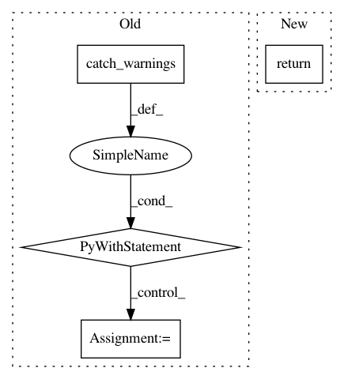

327235adabdcdff566ff74413795091353dcfc1f,batchflow/models/metrics/utils.py,,infmean,#Any#Any#,48
Before Change
arr = np.array(arr)
arr[np.isinf(arr)] = np.nan
// Mean of empty slice is expected to be np.nan, so the warning is redundant
with warnings.catch_warnings():
warnings.simplefilter("ignore", category=RuntimeWarning)
arr = np.nanmean(arr, axis=axis)
if np.isscalar(arr):
return np.inf if np.isnan(arr) else arr
arr[np.isnan(arr)] = np.inf
return arr
After Change
if isinstance(masked, ma.core.MaskedConstant):
return np.inf
masked[masked.mask] = np.inf
return masked.data
In pattern: SUPERPATTERN
Frequency: 3
Non-data size: 4
Instances
Project Name: analysiscenter/batchflow
Commit Name: 327235adabdcdff566ff74413795091353dcfc1f
Time: 2019-10-16
Author: 53620809+cdtn@users.noreply.github.com
File Name: batchflow/models/metrics/utils.py
Class Name:
Method Name: infmean
Project Name: mne-tools/mne-python
Commit Name: 6ca8ec3786d864f53ab379f59e1f6668afd1ff5e
Time: 2019-11-22
Author: guillaume.favelier@gmail.com
File Name: mne/viz/backends/_pysurfer_mayavi.py
Class Name: _Renderer
Method Name: screenshot
Project Name: IndicoDataSolutions/finetune
Commit Name: 01713868bcc1b6edcdfb07a14fa5854b470cba32
Time: 2018-09-25
Author: benlt@hotmail.co.uk
File Name: finetune/base.py
Class Name: BaseModel
Method Name: _featurize